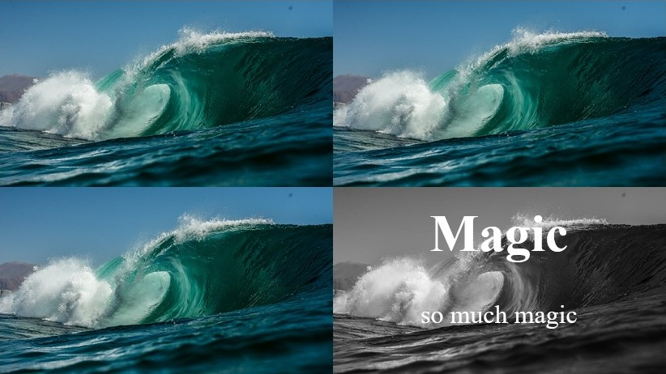

En funktion till ett projekt
Jag brukar dela upp mina projekt ibland till flera mindre för att sedan sätta ihop alla bitar till ett. Det blir mycket enklare att experimentera. När det funkar precis som jag vill så är det bara att klistera in koderna. Det är bra att våga testa på olika saker.
Det här funktionen har jag haft problem med men när jag delade upp den till ett eget projekt, kunde jag lösa det direkt. Funktionen går ut på att när man har muspekaren över en bild så dyker ett överdrag med rubrik upp.